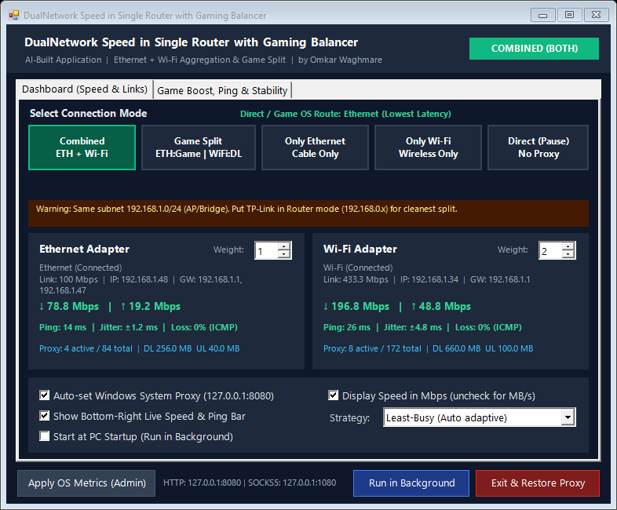
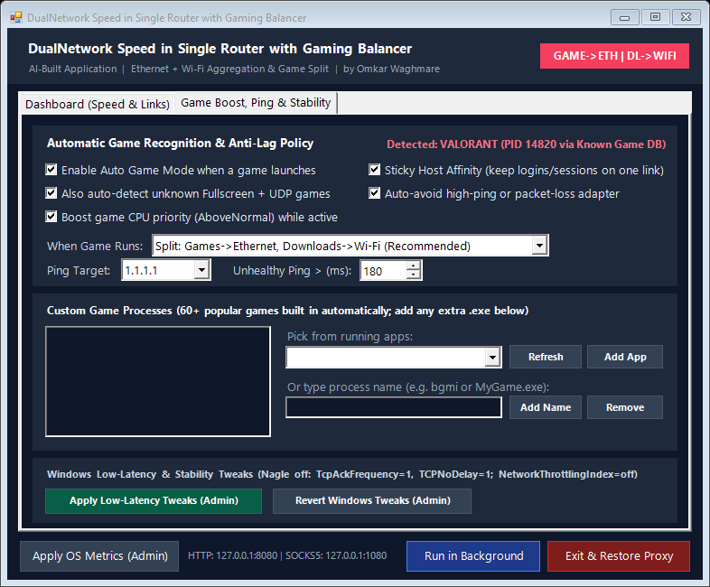

DualNetwork Speed in Single Router
with Gaming Balancer
An AI-built open-source Windows GUI app, floating bottom-right speed & ping bar, and CLI toolkit that balances multi-connection downloads & uploads across Ethernet + Wi-Fi and keeps gaming traffic locked onto low-latency Ethernet.
Implemented Windows UI
Captured directly from the compiled DualWanBalancer.exe (.NET Framework 4.x WinForms).


Core Capabilities
Engineered specifically around Windows Strong-Host networking and real-world Dual-WAN routing.
Multi-Connection Aggregation
Runs a local HTTP/HTTPS CONNECT & SOCKS5 proxy binding outbound sockets across both Ethernet and Wi-Fi with Least-Busy, Weighted Round-Robin, and Lowest-Ping strategies.
Games on Cable, Downloads on Wi-Fi
Detects 55+ PC games (plus custom .exe apps & Fullscreen+UDP heuristics), prioritizes Ethernet (Metric 10) for direct game sockets, and isolates browser/IDM downloads onto Wi-Fi.
Per-Link Ping, Jitter & Loss
Measures RTT independently out of Ethernet and Wi-Fi every 3 seconds via Win32 IcmpSendEcho2Ex (with TCP:443 fallback) and fails over automatically if a link degrades.
Sticky Host Affinity & Safe Recovery
Pins login & game launcher domains to one uplink (5-min TTL) to prevent disconnects, and cleanly backs up & restores Windows System Proxy settings on exit or power loss.
Reversible Windows TCP Tweaks
Optional one-click Admin optimization disabling Nagle's algorithm (TcpAckFrequency=1, TCPNoDelay=1) and multimedia throttling, with JSON backup and 1-click revert.
PowerShell & Node.js Tools
Includes dual-wan-manager.ps1 (Status, Proxy, EqualMetrics, Restore) and zero-dependency dual-wan-proxy.js for headless or scripted workflows.
Connection Modes
| Mode | Proxy / Browser / Downloads | Games / Direct OS Sockets | Best For |
|---|---|---|---|
| Combined | Balances Ethernet + Wi-Fi | Ethernet (when Metric 10 < 50) | Max multi-part downloads, uploads & surfing |
| Game Split | Isolated to Wi-Fi | Ethernet (lowest latency cable) | Gaming while browsers/downloads run in background |
| Only Ethernet | Ethernet only | Ethernet only | Strict wired-only stability |
| Only Wi-Fi | Wi-Fi only | Wi-Fi (when OS metrics applied) | Using Wi-Fi exclusively |
| Direct (Pause) | Bypassed (Proxy restored) | Windows default routing | Troubleshooting or raw OS default |
Quick Build & Usage (Windows 10 / 11)
Compile directly with the built-in Windows csc.exe compiler — no Visual Studio or NuGet needed.
# 1. Clone or download this repository, then build DualWanBalancer.exe: powershell -NoProfile -ExecutionPolicy Bypass -File .\DualWanApp\build.ps1 # 2. Launch the GUI (or copy DualWanApp\bin\DualWanBalancer.exe to Desktop): Start-Process .\DualWanApp\bin\DualWanBalancer.exe # 3. Optional (once as Admin, or click "Apply OS Metrics (Admin)" inside the app): # Prioritize Ethernet (Metric 10) over Wi-Fi (Metric 50) so Games always take Ethernet: Set-NetIPInterface -InterfaceAlias "Ethernet" -AddressFamily IPv4 -AutomaticMetric Disabled -InterfaceMetric 10 Set-NetIPInterface -InterfaceAlias "Wi-Fi" -AddressFamily IPv4 -AutomaticMetric Disabled -InterfaceMetric 50